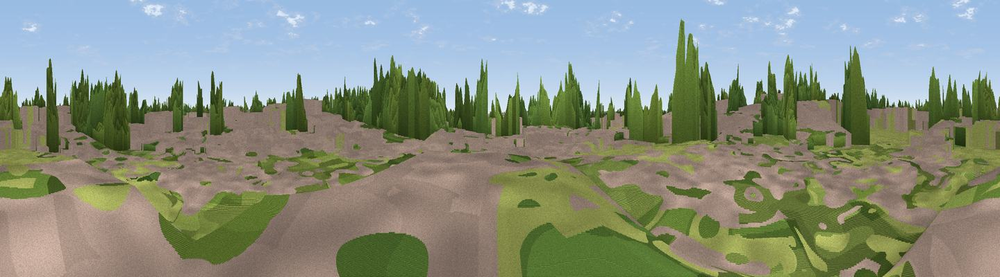

Normanston Hill
#39329 in England · top 21% of its area beats it · near OultonThe view, rendered

A 360° render of this exact spot computed from the terrain model, tree cover and land cover — summer colours, afternoon light, calibrated against photographs of famous viewpoints. Real trees, hedges and buildings will differ in detail.
The panorama
Grey silhouette: terrain skyline in each direction (720 bearings, Earth curvature and refraction included). Dashed green: skyline with trees (+15 m) and buildings (+8 m) as obstacles. Blue strip: how far the ground is visible on each bearing.
Where the view opens
Wedge length = distance to the farthest visible ground on that bearing (vegetation-aware). Rings at 10, 25 and 50 km.
What fills the view
44% built-up · 19% woodland · 16% water · 15% grassland · 6% cropland
Angular shares of the visible panorama (visual magnitude), not map area. Landscape diversity 0.63 (0–1 Shannon).
Key numbers
More beautiful places nearby
The staircase of upgrades: each row has a higher view potential than everything closer. Driving times are estimates from straight-line distance, calibrated against real road routing — check an actual route before setting out.
| Place | Direction | Drive | Score |
|---|---|---|---|
| Viewpoint near Great Yarmouth | N · 14 km | ~25 min | 33.4 |
| Telescope | SSW · 18 km | ~31 min | 35.0 |
| Gun Hill | SSW · 19 km | ~32 min | 46.7 |
| Viewpoint near Paston | NNW · 46 km | ~67 min | 56.1 |
| Viewpoint near Mundesley | NNW · 47 km | ~68 min | 58.9 |
| Viewpoint near Trimingham | NNW · 51 km | ~72 min | 62.4 |
| Viewpoint near Sidestrand | NNW · 54 km | ~75 min | 65.3 |
| Viewpoint near Overstrand | NNW · 56 km | ~78 min | 67.5 |
52.48805, 1.73934 · source: dobih hill · position refined by local search. Computed location — check access rights before visiting.